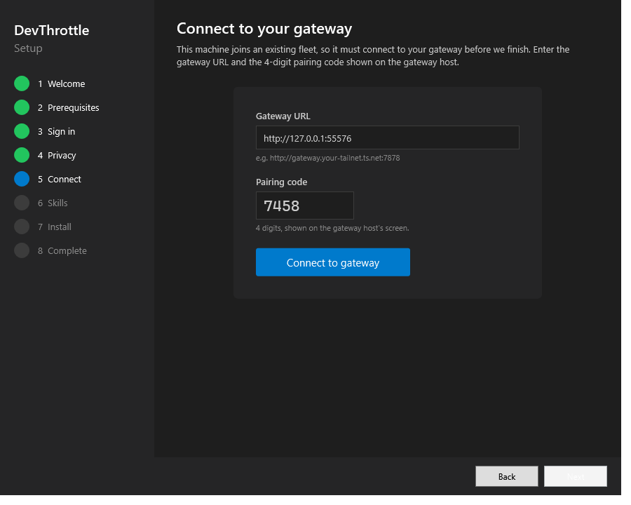
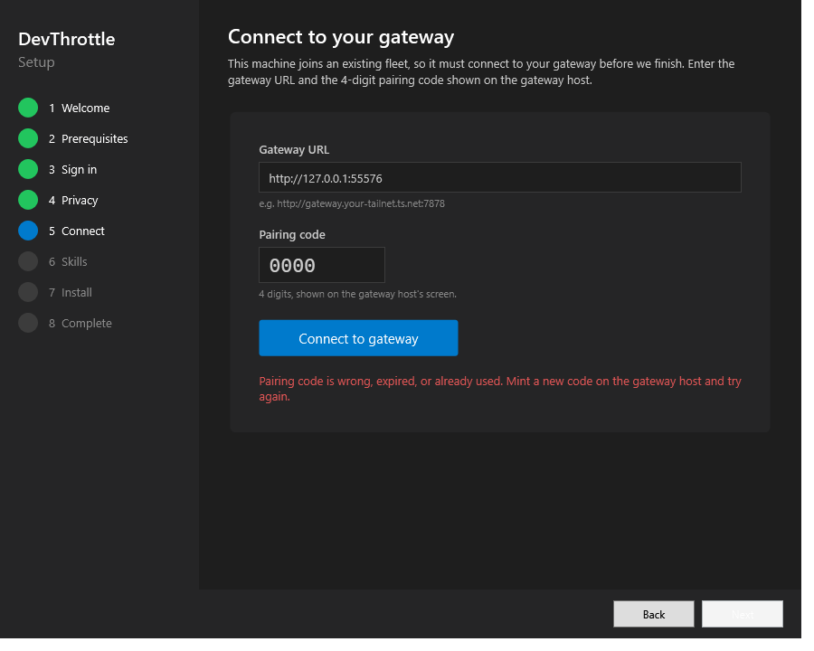
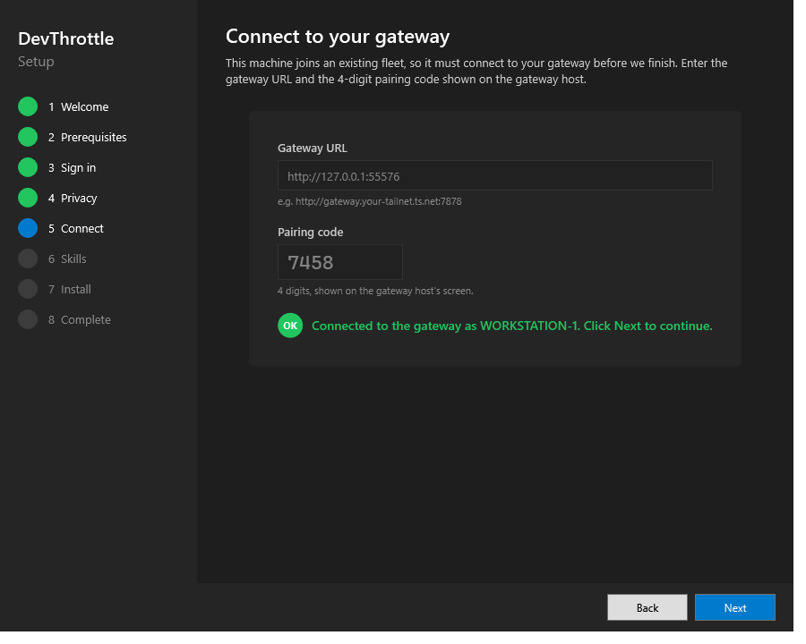

Title: Workstation install requires pairing to a Gateway before finishing
Pull Request: #680 (branch issue-646-workstation-gateway-pairing)
Verifier: QA Agent (independent) - verified in an isolated worktree built from the PR branch head, never the developer's binary.
Scope: tools/cc-director-setup, tools/cc-director-setup-engine (reuses the gateway device-pairing surface POST /devices/register).
| Check | Expected | Actual | Result |
|---|---|---|---|
| Single role-aware navigation policy | WizardStepFlow owns ordering; MainWindow has no parallel/ad-hoc step rail |
MainWindow.VisibleSteps()/NextStep()/PrevStep() are thin wrappers over WizardStepFlow (MainWindow.xaml.cs:62-64). The pre-rebase ad-hoc 8-step rail, RequiresGatewayPairing, ApplyConnectStepVisibility, and duplicate Next/Prev helpers are gone. UpdateSidebar is driven purely by VisibleSteps(). |
PASS |
| Workstation rail = includes Connect, excludes Sign-in | Fresh Workstation -> [1,2,4,5,6,7,8] |
WizardStepFlowTests.VisibleSteps_WorkstationFreshInstall_DropsSignInIncludesConnect asserts exactly [1,2,4,5,6,7,8], Contains StepConnect, DoesNotContain StepSignIn. Passed. |
PASS |
| Gateway rail = includes Sign-in, excludes Connect (exact inverse) | Fresh Gateway -> [1,2,3,4,6,7,8] |
VisibleSteps_GatewayFreshInstall_IncludesSignInExcludesConnect asserts [1,2,3,4,6,7,8], Contains StepSignIn, DoesNotContain StepConnect. Plus next/prev walk tests for both roles. Passed. |
PASS |
| WizardStepFlowTests suite | All rail + nav assertions pass | 18 WizardStepFlow tests in a 39-test setup suite: 39 passed, 0 failed. | PASS |
| # | Criterion | Expected | Actual / Evidence | Result |
|---|---|---|---|---|
| 1 | Workstation install presents a mandatory gateway-pairing step (URL + pairing code) | Step present on Workstation rail, no skip | Connect (StepConnect=5) is in the Workstation visible set and is never skippable. GatewayConnectStep.xaml renders a real Gateway-URL field, a 4-digit pairing-code field, and a Connect button (see screenshot 01). |
PASS |
| 2 | Verifies reachability + pairing (device key issued via POST /devices/register); bad URL / bad code blocks with a clear message |
Success only on a real key; bad-url / unreachable / wrong-code / no-key all block | Independently exercised against a REAL running disposable gateway (real PairingCodeService + real DeviceRegistry behind a real Kestrel host, isolated CC_DIRECTOR_ROOT). The real GatewayPairingRunner: bad URL blocked (no call), unreachable blocked, a wrong code rejected by the gateway's real HTTP 401 blocked, a correctly minted code verified (real HTTP 201) and a real per-device key issued, and single-use replay blocked. See the harness transcript below. 10 unit tests (GatewayPairingRunnerTests) cover the same matrix. |
PASS |
| 3 | On success, gateway URL + issued device key persisted to config.json |
config.json gains a gateway block with the URL and the issued key |
After the successful pairing the harness read the persisted config.json from the isolated root: gateway.url equals the gateway URL and gateway.token equals the exact issued device key. Persisted via the existing GatewayCredentialStore.SaveEnrolledKey (same store the Director's runtime Connect dialog uses). |
PASS |
| 4 | Install cannot complete (Finish disabled/blocked) while pairing is unverified | Next disabled until IsVerified |
MainWindow.UpdateNavButtons sets NextButton.IsEnabled = _gatewayConnectStep?.IsVerified == true on the Connect step; there is no skip. The harness also confirmed nothing is persisted before a verification succeeds (no premature config.json). Screenshot 01 (Next greyed) and 02 (bad code, Next still greyed) show the gate. |
PASS |
| 5 | Proof shows a Workstation install blocked until pairing verifies, then completing | Blocked -> verified -> Next enabled | Screenshots 01 (Next disabled), 02 (bad code blocked, Next disabled), 03 (verified "Connected to the gateway as WORKSTATION-1", Next enabled) demonstrate the gate releasing only on a verified pairing. | PASS |
The QA Agent stood up a real Kestrel host exposing the exact /devices/register contract driven by the real PairingCodeService + real DeviceRegistry, minted real codes, and ran the real GatewayPairingRunner against it with storage isolated to a temp CC_DIRECTOR_ROOT. The real install was never touched. The harness lived outside the repo and was deleted after the run.
CC_DIRECTOR_ROOT = ...\Temp\dt646-qa-e6153d70
Disposable gateway listening at http://127.0.0.1:55820
[PASS] AC2 bad-url blocks :: The gateway URL is not valid. Use http://host:port or https://host:port.
[PASS] AC2 unreachable blocks :: Could not reach the gateway at http://127.0.0.1:1. ...
[PASS] AC2 bad-code blocks (real 401) :: Pairing code is wrong, expired, or already used. ...
[PASS] AC4 no persist before verify :: config.json absent as expected
[PASS] AC2 correct code verifies (real 201)
[PASS] AC2 device key issued :: key=fOr1Pp7oHjSwoxH_PUcD4V7LOQvk7ZcwRRqfAKsI9k8
[PASS] AC3 config.json written
----- config.json -----
{
"gateway": {
"url": "http://127.0.0.1:55820",
"token": "fOr1Pp7oHjSwoxH_PUcD4V7LOQvk7ZcwRRqfAKsI9k8"
}
}
-----------------------
[PASS] AC3 gateway.url persisted :: url=http://127.0.0.1:55820
[PASS] AC3 gateway.token == issued key :: token=fOr1Pp7oHjSwoxH_PUcD4V7LOQvk7ZcwRRqfAKsI9k8
[PASS] AC2 single-use: replay blocked :: first=True, second=False
TOTAL FAILURES: 0
Connect step with Next disabled (pairing not yet verified):

Bad pairing code blocked with a clear message; Next stays disabled:

Pairing verified; Next enabled so the install can proceed:

Proof-freshness note (not a defect): the three screenshots above were captured by the developer before the rebase, so their left-hand sidebar still shows "3 Sign in" on a Workstation install. After the integration into WizardStepFlow, a fresh Workstation correctly DROPS Sign-in (rail [1,2,4,5,6,7,8]). That integrated behavior is proven authoritatively by the 18 passing WizardStepFlowTests (and the UpdateSidebar code that renders only the visible steps), so the stale sidebar is cosmetic proof drift, not a behavioral defect. The Connect-step behavior the screenshots demonstrate (gate disabled, bad code blocked, verified-then-enabled) is unchanged and correct.
dotnet build cc-director.sln: Build succeeded, 0 Warning(s), 0 Error(s).CcDirectorSetup.Tests, includes 18 WizardStepFlow tests): 39 passed, 0 failed.CcDirector.Setup.Engine.Tests, includes 10 GatewayPairingRunner tests): 176 passed, 0 failed./devices/register enrollment surface, the per-device-key trust model, and GatewayCredentialStore - no new endpoint, no new secret path.The pairing gate logic - verify against a real /devices/register, real per-device key issuance, real config.json persistence, the Finish gate, and the role-aware rail - was verified end-to-end against a REAL running disposable gateway and by the full unit-test suites. A full live installer run that writes to the real machine's per-user install was deliberately NOT performed (it would touch the real system); the installer-UI behavior is evidenced by the wired GatewayConnectStep + MainWindow gating code and the developer's Connect-step screenshots. Every acceptance criterion is met.
VERDICT: PASS - all 5 acceptance criteria verified; integration coherent; merge approved.